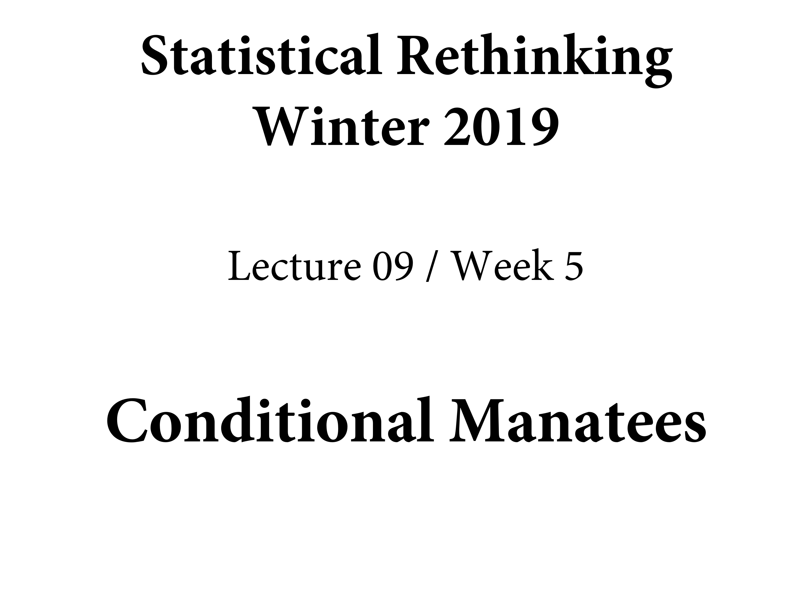

Chapter 8 Conditional Manatees
library(here)
source(here::here("code/scripts/source.R"))slides_dir = here::here("docs/slides/L09")

There are things in the universe that really are dichotomous – they either happen or they don’t. Tests for them work really nicely. How many animals do you see? Tests for most congenital forms of colour-blindness. Most of what we do in statistics is unfortuantely like this. Most outcomes are continuous.
This is why there are no tests in this course. When you do that you’re making a decision way too early. Stop testing and start thinking. There are a bunch of off-the-shelf tools that have value. But eventually in your research you have to do better than off-the-shelf. You need to make it bespoke. We want besoke models and risk analyses. Your analysis needs to be bespoke to the problem at hand. It’s ethically irresponsible to do anything else.
Here’s an example. NY is getting pummelled wih blizzards right now. In Jan ’15, there was a prediction of a catastrophic blizzard. The city was shut down. But the blizzard didn’t come and everyone was mad. But it was the right thing to do.

Why did they shut it down? They relied on a forecast. Their forecast was way more extreme. What do you do if you’re a responsible public servant?
Accuracy always matters, but it’s not the only thing that matters. When you make a decision, you have to take into account the costs and benefits of each course of action. Even though it was a tail probability that it could have been that bad, if it was, it would have been catastrophic. You may need to plan for the extreme events in case many people die.
![This is a manatee. Related to an elephant. Gentle vegetarian mermaid. The only natural predator it has is the speedboat. This is quite common to manatees in Florida, where a lot of people own speedboats. Probably more manatees than not have these sorts of scars. Florida has gone to a lot of effort to avoid this. Now you can put a cage around the blades. It turns out that hasn't helped at all, for an interesting reason statistically. Rotors mainly don't kill manatees -- the keel does. You see manatees with rotor scars is because it doesn't kill them. Then you don't show up in the sample.](slides/L09/07.png)
This is a manatee. Related to an elephant. Gentle vegetarian mermaid. The only natural predator it has is the speedboat. This is quite common to manatees in Florida, where a lot of people own speedboats. Probably more manatees than not have these sorts of scars. Florida has gone to a lot of effort to avoid this. Now you can put a cage around the blades. It turns out that hasn’t helped at all, for an interesting reason statistically. Rotors mainly don’t kill manatees – the keel does. You see manatees with rotor scars is because it doesn’t kill them. Then you don’t show up in the sample.
Same information structure with WWII bombers. They’re a workhorse bomber.
![As the war dragged on, metal came in short supply. They wanted to up-armour the bombers. The RAF asked the statistician to look at the damage pattern and figure out where to put the armour. You need to armour selectively to avoid weighing the whole thing down. So what's the most crucial place? The intuition was to put the armour where the damage was. Wald went for the opposite, because he didn't condition on this collider. None of the planes that made it back had holes in the cockpit or engine. So he recommended up-armouring the parts with the least damage.](slides/L09/09.png)
As the war dragged on, metal came in short supply. They wanted to up-armour the bombers. The RAF asked the statistician to look at the damage pattern and figure out where to put the armour. You need to armour selectively to avoid weighing the whole thing down. So what’s the most crucial place? The intuition was to put the armour where the damage was. Wald went for the opposite, because he didn’t condition on this collider. None of the planes that made it back had holes in the cockpit or engine. So he recommended up-armouring the parts with the least damage.
The variable we’ve conditioned on is survival. Selection bias. It opens the path… the rotor damage confounds survival. This is very common when there are multiple things that can affect these outcomes.
We need to grow up our models. Everything we do is about conditioning. Everything is conditional. Today we’ll work on how the influence of some variable is conditional on other variables. We’ll build it in because nature is additive.
Here are some natural examples. In GLMs there necessarily are interactions.
DAGs are totally heuristic. They’re not enough to make accurate predictions; they’re tools to help you understand confound risk, and figure out a deconfounding strategy if one exists.
On the left is a hypothetical and completely ridiculous example. Like what we’ve looked at so far, where there are independent additive terms. If there’s sugar in there, they interact. On the right is a fanciful representation that captures that relationship.